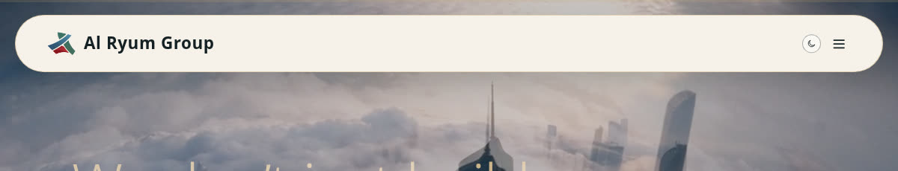
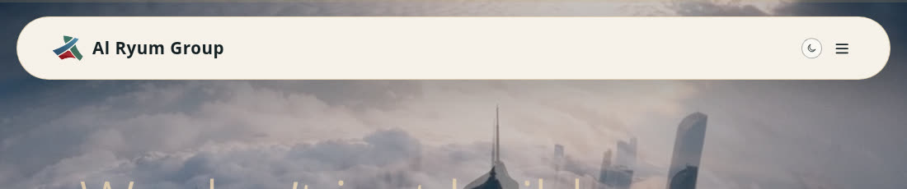
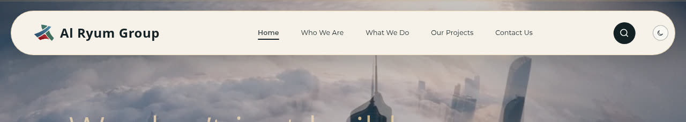
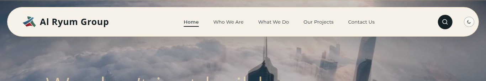
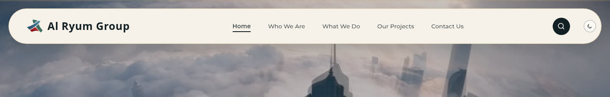
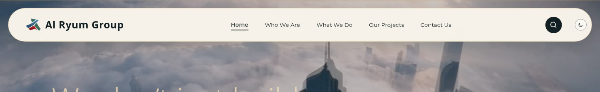

Reported symptom: "the menu bar looks empty until I zoom out then the contents come."
Cause: the desktop navigation switches on at xl: = 1280px, not at
lg: = 1024px. Below 1280px the five links are hidden and replaced by a hamburger,
so the middle of the pill is blank. Zooming the browser out widens the CSS viewport past
1280px, which is why the links appear to come back.
| CSS width | Nav links | Hamburger | Pill centre |
|---|---|---|---|
| 900 px | absent | present | blank |
| 1000 px | absent | present | blank |
| 1024 px | absent | present | blank |
| 1100 px | absent | present | blank |
| 1200 px | absent | present | blank |
| 1280 px | present (5) | absent | full menu |
| 1366 px | present (5) | absent | full menu |
| 1440 px | present (5) | absent | full menu |
| 1485 px | present (5) | absent | full menu |

lg breakpoint — still collapsed
xl breakpoint where the switch happens



The switch is on CSS viewport width, not window width. Anything that reduces the CSS viewport below 1280px collapses the menu:
That is the likely trigger for the report: the menu is missing at the user's normal zoom, and zooming out past 1280px brings it back.
Lower the nav switch from xl: (1280) to lg: (1024) so the full menu
survives ordinary laptop widths and the hamburger is reserved for tablet and phone. Then confirm
the pill still fits at 1024–1100px with five links restored — if it is tight, tighten the label
spacing or the pill padding at lg rather than raising the breakpoint again.
Crops taken from headless Chromium renders of the live build at commit 26af093.
Full-width originals available on request.